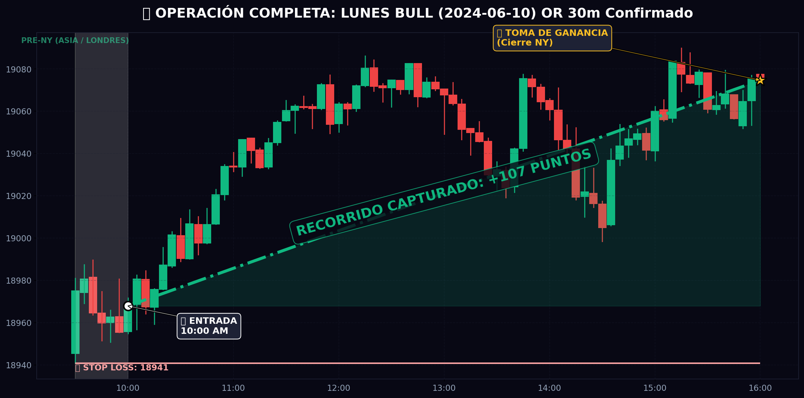
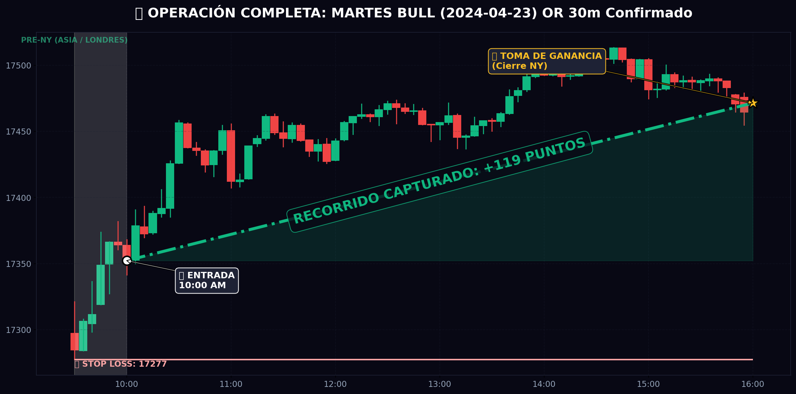
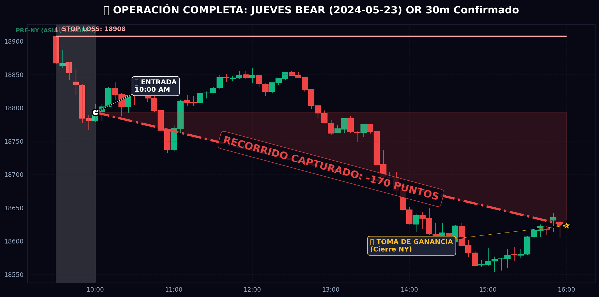
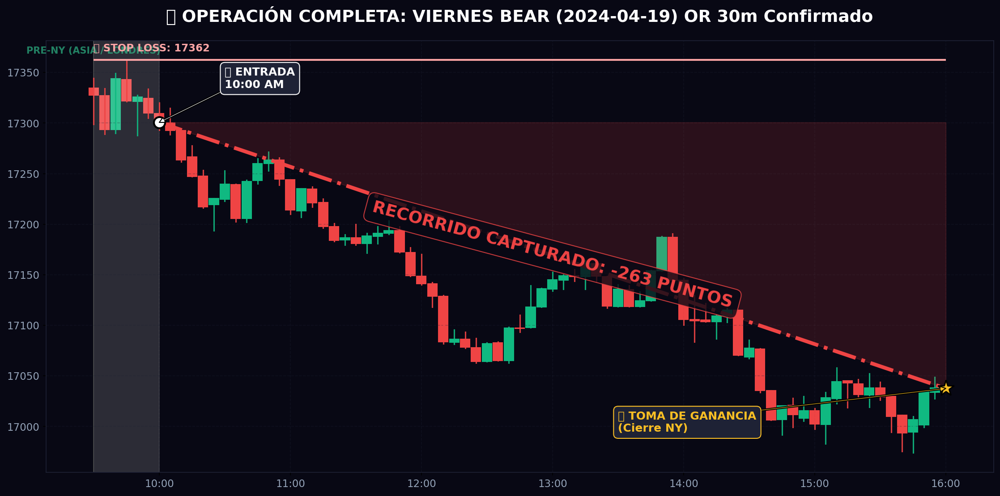

Guía Oficial de Whale Radar para Entradas Intradía en NQ
Resumen visual de tu ventaja estadística intradía para NQ.
| Día de la Semana | Si el OR a las 10:00 es... | Tu Acción |
|---|---|---|
| LUNES | BULL 🟢 (Cierra arriba) | COMPRAR (Largo) - 71% de éxito |
| MARTES | BULL 🟢 (Cierra arriba) | COMPRAR (Largo) - 72% de éxito |
| MIÉRCOLES | Cualquier dirección ⚠️ | Día Tóxico - Mejor no operar o arriesgar menos. |
| JUEVES | BEAR 🔴 (Cierra abajo) | VENDER (Corto) - 71% de éxito |
| VIERNES | BEAR 🔴 (Cierra abajo) | VENDER (Corto) - 73% de éxito |
Uno de los mayores dilemas al entrar a las 10:00 AM es si asegurar ganancias antes del almuerzo (12:00 PM) para evitar ruido, o dejar correr la operación hasta la campana (16:00 PM). Corrimos el algoritmo con Stop Loss activado y estos son los resultados matemáticos:
| Patrón de 10:00 AM | Cierre de Mediodía (12:00PM) | Cierre Oficial (16:00PM) | Veredicto Institucional |
|---|---|---|---|
| LUNES BULL 🟢 | -11 pts ❌ (52% win rate) |
-11 pts ❌ (38% win rate) |
⚠️ Peligro. Los lunes barren stops agresivamente. Toma ganancias pronto o mueve stop a breakeven antes del mediodía. |
| MARTES BULL 🟢 | +3 pts ⚠️ (51% win rate) |
+33 pts ✅ (54% win rate) |
🏛️ Ir por el Cierre. La tendencia compradora se respeta todo el día. |
| JUEVES BEAR 🔴 | +12 pts ⚠️ (35% win rate) |
+21 pts ✅ (38% win rate) |
🏛️ Ir por el Cierre. Sufre retrocesos, pero las caídas ganadoras al cierre compensan. |
| VIERNES BEAR 🔴 | +27 pts ✅ (42% win rate) |
+43 pts 🚀 (46% win rate) |
👑 El Patrón Rey. Los institucionales tiran el precio todo el día. Nunca cierres un Viernes bajista al mediodía. |
Aquí tienes un ejemplo de los 4 días más rentables usando este protocolo. Para cada gráfico podrás ver la evolución desde la sesión asiática hasta el cierre de Nueva York.
El Lunes abre, a las 10:00 AM el cierre de 30min es mayor a la apertura de 9:30 AM. Entramos en COMPRA y nos protegemos por debajo del mínimo de la primera media hora.

El Martes a las 10:00 AM confirma fuerza alcista. Nuestro Stop Loss está abajo de la consolidación matutina. Fíjate cómo los europeos/asiáticos movieron el precio, pero NY dictó la verdadera dirección alcista del día.

Llega el Jueves y a las 10:00 AM la vela indica debilidad (cierre inferior a apertura de NY). Vendemos en corto y colocamos Stop Loss encima del máximo de las 9:30-10:00. El precio no vuelve a mirar atrás.

El día más peligroso (y el de mayor acierto histórico bajista). A las 10:00 AM confirma bajista. Cortos inmediatos. Los institucionales liquidan posiciones perdedoras antes del fin de semana llevándose el mercado al precipicio.
